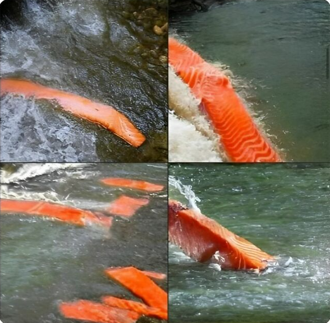
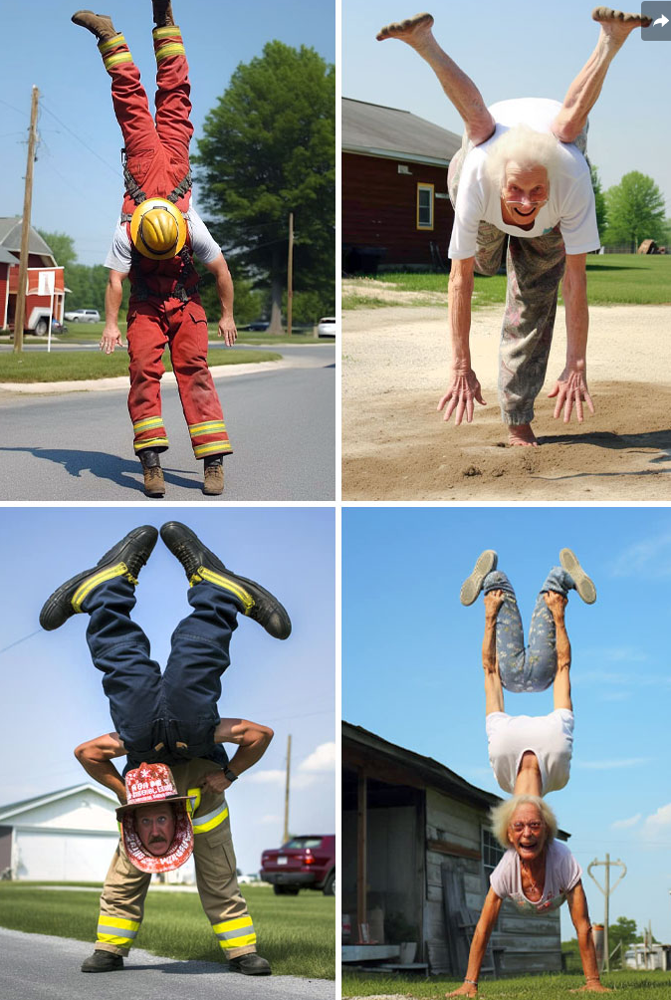
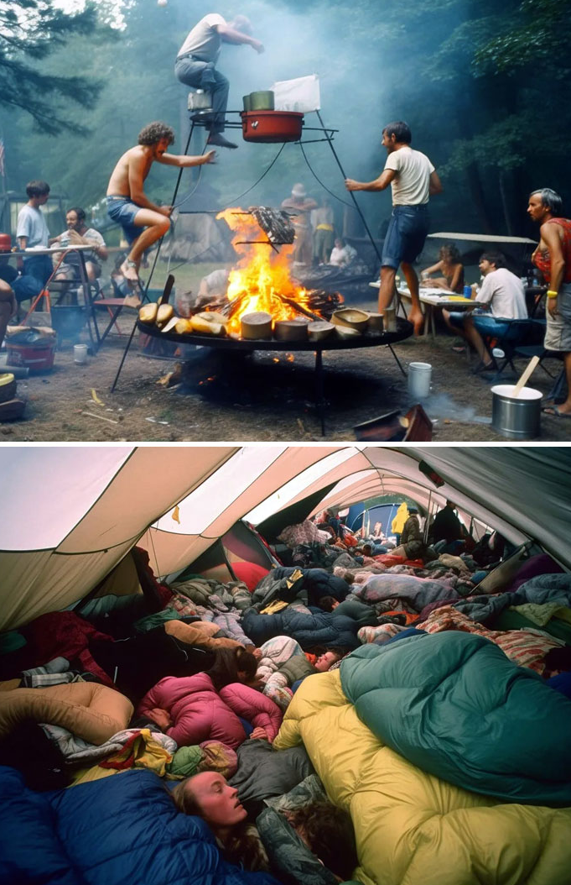
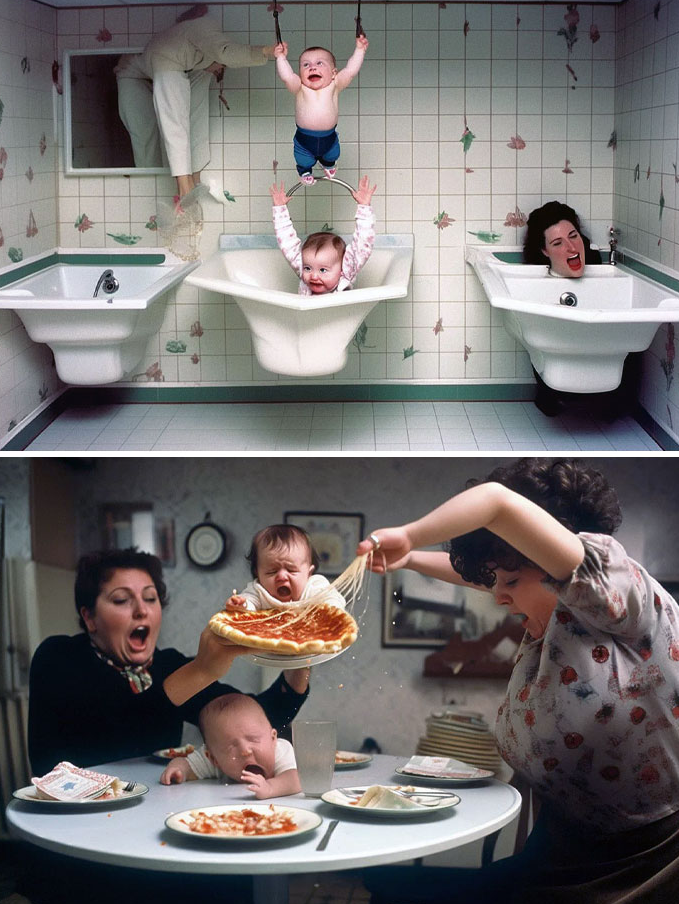

10 classic AI art fails (from the good old days).
Before today’s hyper-polished AI images, there was an earlier era where things were… less together. Bored Panda’s AI Fails page captures that moment perfectly — a time when image generators like early versions of Midjourney were considered state of the art, even as they confidently misunderstood anatomy, physics, and everyday life. These images weren’t mistakes by the standards of the time; they were the cutting edge. Looking back now, they read less like failures and more like snapshots of AI learning in public. Below are ten standouts from that era, when artificial intelligence was trying its best and accidentally creating comedy.

Wiener Dogs Race
Salmon in the river
practicing yoga

Fisherman That Catches A Salmon
A Man Mansplaining A Woman On How To Eat A Hamburger
handstand
camping
parenting is hard
yoga with toddlers
the office